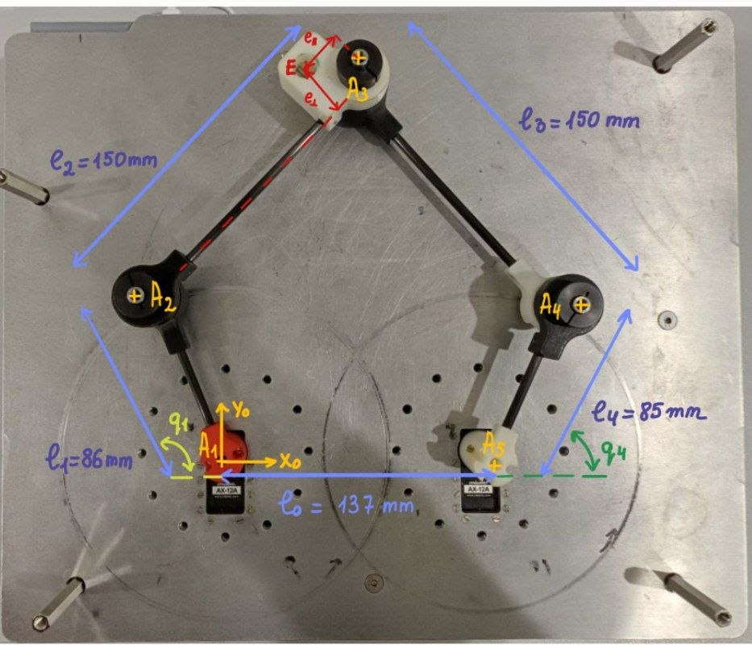

Description mécanique de la plateforme système 5 barres
Le système 5 barres est une chaîne cinématique fermée et plane. Deux bras sont entraînés chacun par un moteur fixé sur le bâti ; leurs extrémités sont reliées par deux avant-bras, qui se rejoignent au niveau de l’organe terminal porte-crayon. En faisant tourner les deux moteurs, on déplace le crayon dans le plan de la feuille.

Schéma cinématique du système 5 barres (source : cours de M. YGUEL).
Les deux moteurs sont placés en \(A_1\) et \(A_5\) : ce sont les articulations actives. Les articulations \(A_2\), \(A_3\) et \(A_4\) sont passives.


La plateforme réelle, annotée avec nos notations et nos dimensions mesurées.
Dimensions mesurées
Nous avons mesuré les longueurs des barres directement sur la plateforme, entre les centres des pivots. Elles diffèrent légèrement des valeurs du modèle 3D du cours : ce sont nos valeurs mesurées qui servent de référence pour le pilotage du robot réel.
Symbole |
Grandeur |
Valeur mesurée |
Valeur du modèle 3D |
|---|---|---|---|
\(l_0\) |
entraxe des moteurs \(A_1A_5\) |
137 mm |
137,98 mm |
\(l_1\) |
bras gauche \(A_1A_2\) |
86 mm |
80 mm |
\(l_2\) |
avant-bras gauche \(A_2A_3\) |
150 mm |
157 mm |
\(l_3\) |
avant-bras droit \(A_3A_4\) |
150 mm |
147 mm |
\(l_4\) |
bras droit \(A_4A_5\) |
85 mm |
79 mm |
Position du crayon
Le porte-crayon est fixé sur l’avant-bras gauche (link2). Le crayon n’est donc pas exactement en \(A_3\). Mesuré depuis \(A_2\), le long de \(\overrightarrow{A_2A_3}\), il se trouve à 134 mm, et il est décalé latéralement de 26 mm. Par rapport à \(A_3\), cela donne :
\(e_\parallel = 134 - l_2 = -16\) mm (le crayon est en deçà de \(A_3\)) ;
\(e_\perp = 26\) mm.
Ces valeurs sont utilisées dans les modèles géométriques.
Note
Reste à compléter au prochain accès au robot : la hauteur de la pointe du crayon, la présence éventuelle d’un mécanisme de levée du crayon, les butées mécaniques des deux bras et la position de la zone de dessin dans le repère.
Liaisons
Toutes les liaisons entre les barres sont des liaisons pivot d’axe perpendiculaire au plan de travail. Le mécanisme possède deux degrés de liberté, correspondant aux deux moteurs.